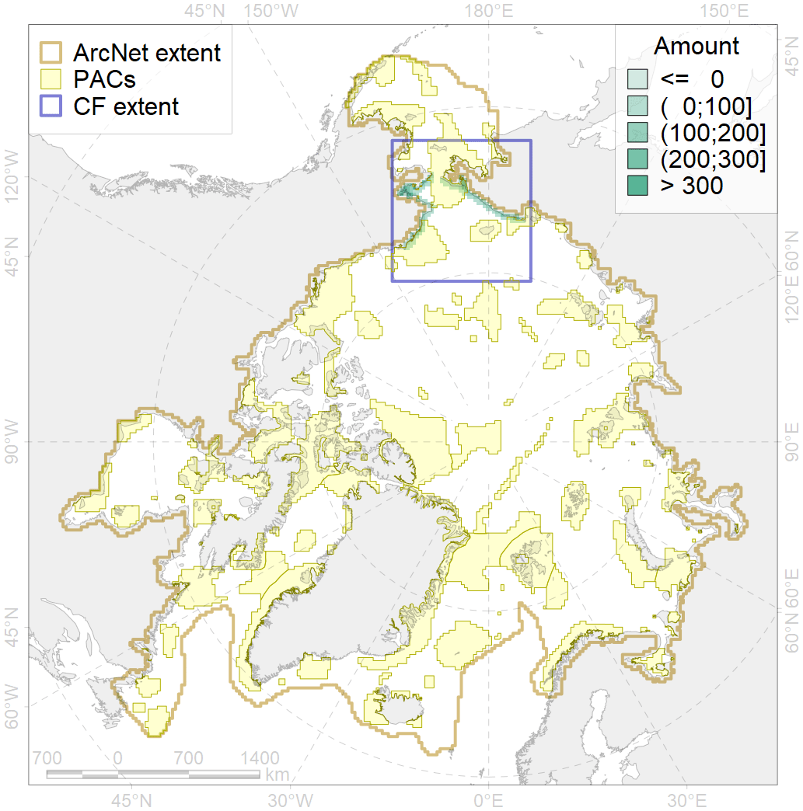
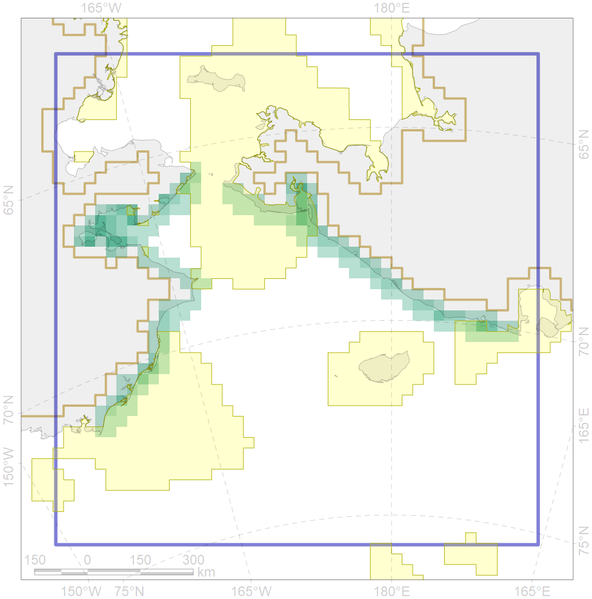

3004

| CF code | 3004 |
| CF name | Fast Ice distribution in the Chukchi Sea region |
| Time Period | 2009 - 2018 |
| Source(s) | Merged ice charts |
| Seasonality | 01 November - 31 July; year of census is for January |
| Depth Horizon | Sea level (0m) |
| Methodology | Processing of ice charts |
| Use Restrictions | Joined terms of data licenses, copyrights, restrictions, terms of use, disclaimers, etc. N…1 |
| Author Name | Nikita Platonov |
| Notes | |
| Scenario’s Target | 0.06 |
| Target Achievement | 0.399 (Scenario: 664.7%) |
| PAC | Share of the Total Amount within the PAC | Share of the Target Achievement for the ArcNet | PAC’s Contribution to the Target Achievement |
|---|---|---|---|
| 5 | 23.3%27.0% | 363.8%417.1% | 54.7%62.8% |
| 6 | 1.3%4.6% | 21.5%77.5% | 3.2%11.7% |
| 8 | 3.7%3.7% | 36.9%36.9% | 5.6%5.6% |
| 60 | 8.3%12.3% | 99.2%133.4% | 14.9%20.1% |
| inner | 36.6%47.6% | 521.4%665.0% | 78.4%100.0% |
| outer | 63.4%86.9% | 143.3%480.0% | 21.6%72.2% |
| † supplement values are for area consistence whereas principal values are for Accenter compatible gridded stats |